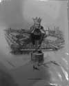

Index
|
Section II. The Crucible of Modern Free Speech:,
1890-1948
|
Subsection A. Patrons and
Citizens
|
| Group 1: The Pullman Strike and Boycott |
A.
Model City, Company Town
|
find: Plan
of Pullman (NLPullman Archives)
|
|
| find: Photo
of main square from “the Story of Pullman” (NLrepro?) |
|
find: Text
from “The Story of Pullman” (NLrepro?)
|
|
| find:: Speech
of Jennie Curtis to the ARU (NLPullman Scrapbooks) |
|
B.
Federal Intervention and the Crushing of the Boycott
|
Item 1: “King Debs” (NL#432)
|

|
Item 2: Young Debs (NL#437) (see
also #454)
|
|
find: Photo
of troops quartered in Grant Park (who has this?)
|
|
find: In
re Debs (can we get this from NARA?)
|
|